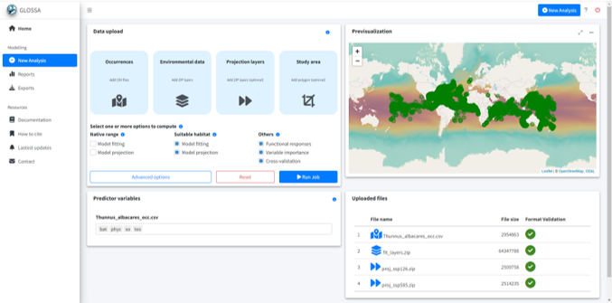
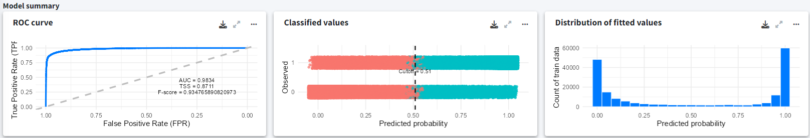
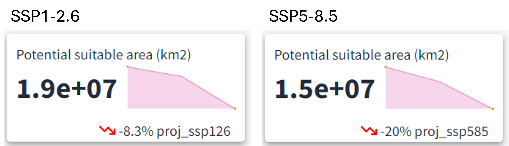
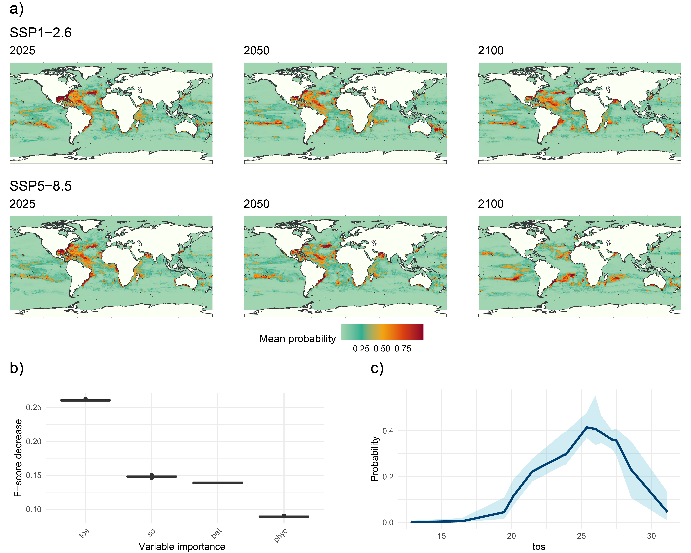

library(glossa)
library(robis)
library(terra)
library(sf)
library(dplyr)Example 1
Worldwide suitable habitat of Thunnus albacares
This example demonstrates how to use the GLOSSA framework to model the suitable habitat of Thunnus albacares (yellowfin tuna) on a global scale under different climate scenarios.
Introduction
This example demonstrates how to use the GLOSSA framework to model the suitable habitat of Thunnus albacares (yellowfin tuna) on a global scale under different climate scenarios. We will use occurrence data from 1850 to 2014, downloaded from OBIS (Accessed on 26/08/2024), and historical and future environmental projections from ISIMIP (https://data.isimip.org/). The goal is to predict how habitat suitability for Thunnus albacares may change under the SSP1-2.6 (sustainable development) and SSP5-8.5 (high emissions) climate scenarios.
First, we will load the glossa package, as well as terra and sf to work with spatial rasters and vector data. We also load robis for downloading species occurrences. Additionally, the dplyr package will be used for data manipulation.
Data preparation
Download occurrence data
We will download occurrence data for Thunnus albacares from the OBIS database (https://obis.org/taxon/127027) using the robis package. After that, we’ll select the necessary columns for GLOSSA (decimalLongitude, decimalLatitude, timestamp, and pa), and since all records indicate presences, we’ll replace them with a value of 1 (where 1 represents presence and 0 absence, as required by GLOSSA). We will remove records with missing values and filter the data to include only records from 1850 to 2014, aligning with the temporal coverage of our environmental layers.
# Download data from OBIS
albacares <- robis::occurrence(scientificname = "Thunnus albacares")
# Format data to fit GLOSSA
# Select and rename columns of interest
albacares <- albacares[, c("decimalLongitude", "decimalLatitude",
"date_year", "occurrenceStatus")]
colnames(albacares) <- c("decimalLongitude", "decimalLatitude", "timestamp", "pa")
# Convert presence data to 1 (for presences)
table(albacares$pa)
# In this case, we only have presences
albacares <- albacares[albacares$pa %in% c("present", "Present", "Presente", "P"), ]
albacares$pa <- 1
# Remove incomplete records (with NA values)
albacares <- albacares[complete.cases(albacares), ]
# Filter study period to match environmental variables (1850-2014)
albacares <- albacares[albacares$timestamp >= 1850 & albacares$timestamp <= 2014, ]
# Save to file
write.table(as.data.frame(albacares), file = "data/Thunnus_albacares_occ.csv",
sep = "\t", dec = ".", quote = FALSE)Download environmental data
Next, we will download environmental data from ISIMIP, using the GFDL-ESM4 Earth System Model from the ISIMIP3b climate dataset. The variables we’ll download include:
- Sea surface temperature (
tos) - Sea surface water salinity (
so) - Phytoplankton content vertically integrated over all oceans levels (
phyc)
Additionally, we will download bathymetry data from the ETOPO 2022 Global Relief Model by NOAA to include in our analysis. We downloaded the bedrock elevation netCDF version ETOPO 2022 with a 60 arc-second resolution.
# Load environmental data layers
env_data <- list(
tos = terra::rast("data/gfdl-esm4_r1i1p1f1_historical_tos_60arcmin_global_monthly_1850_2014.nc"),
so = terra::rast("data/gfdl-esm4_r1i1p1f1_historical_so-surf_60arcmin_global_monthly_1850_2014.nc"),
phyc = terra::rast("data/gfdl-esm4_r1i1p1f1_historical_phyc-vint_60arcmin_global_monthly_1850_2014.nc")
)
# Process data to calculate annual means for each variable
env_data_year <- list()
n <- 1
for (i in seq(from = 1056, to = (1980 - 12), by = 12)){
for (j in names(env_data)){
env_data_year[[j]][[n]] <- terra::mean(env_data[[j]][[i:(i+11)]])
}
n <- n + 1
}
# Prepare bathymetry data and resample to match environmental data resolution
bat <- terra::rast("data/ETOPO_2022_v1_60s_N90W180_bed.nc")
bat <- -1*bat
bat <- terra::aggregate(bat, fact = 60, fun = "mean")
r <- terra::rast(terra::ext(env_data_year[[1]][[1]]),
res = terra::res(env_data_year[[1]][[1]]))
bat <- terra::resample(bat, r)
for (i in seq_len(length(env_data_year[[1]]))){
env_data_year[["bat"]][[i]] <- bat
}
# Save processed layers to files
dir.create("data/fit_layers")
dir.create("data/fit_layers/bat")
dir.create("data/fit_layers/tos")
dir.create("data/fit_layers/so")
dir.create("data/fit_layers/phyc")
for (i in seq_len(length(env_data_year[[1]]))){
for (j in names(env_data_year)){
terra::writeRaster(
env_data_year[[j]][[i]],
filename = paste0("data/fit_layers/", j ,"/", j, "_", i, ".tif")
)
}
}
# Zip the output files
zip(zipfile = "data/fit_layers.zip", files = "data/fit_layers")Climate projections: SSP1-2.6 and SSP5-8.5
We will now download climate projections for the SSP1-2.6 and SSP5-8.5 scenarios, which represent two different future climate pathways. The SSP1-2.6 scenario assumes sustainable development and slower reductions in CO2 emissions, while the SSP5-8.5 scenario assumes a high-emissions future.
SSP1-2.6
The following environmental variables will be downloaded for the SSP1-2.6 scenario:
# Load SSP1-2.6 climate projection data
env_data <- list(
tos = terra::rast("data/gfdl-esm4_r1i1p1f1_ssp126_tos_60arcmin_global_monthly_2015_2100.nc"),
so = terra::rast("data/gfdl-esm4_r1i1p1f1_ssp126_so-surf_60arcmin_global_monthly_2015_2100.nc"),
phyc = terra::rast("data/gfdl-esm4_r1i1p1f1_ssp126_phyc-vint_60arcmin_global_monthly_2015_2100.nc")
)
# Extract data for 2025, 2050, and 2100
env_data_year <- list()
n <- 1
for (i in c(121, 421, 1021)){
for (j in names(env_data)){
env_data_year[[j]][[n]] <- terra::mean(env_data[[j]][[i:(i+11)]])
}
n <- n + 1
}
# Add bathymetry data to the layers
for (i in seq_len(length(env_data_year[[1]]))){
env_data_year[["bat"]][[i]] <- bat
}
# Save projection data to files
dir.create("data/proj_ssp126")
dir.create("data/proj_ssp126/bat")
dir.create("data/proj_ssp126/tos")
dir.create("data/proj_ssp126/so")
dir.create("data/proj_ssp126/phyc")
for (i in seq_len(length(env_data_year[[1]]))){
for (j in names(env_data_year)){
terra::writeRaster(
env_data_year[[j]][[i]],
filename = paste0("data/proj_ssp126/", j ,"/", j, "_", i, ".tif")
)
}
}
# Zip the output files
zip(zipfile = "data/proj_ssp126.zip", files = "data/proj_ssp126")SSP5-8.5
Similarly, we will download environmental data for the SSP5-8.5 scenario.
# Load SSP5-8.5 climate projection data
env_data <- list(
tos = terra::rast("data/gfdl-esm4_r1i1p1f1_ssp585_tos_60arcmin_global_monthly_2015_2100.nc"),
so = terra::rast("data/gfdl-esm4_r1i1p1f1_ssp585_so-surf_60arcmin_global_monthly_2015_2100.nc"),
phyc = terra::rast("data/gfdl-esm4_r1i1p1f1_ssp585_phyc-vint_60arcmin_global_monthly_2015_2100.nc")
)
# Extract data for 2025, 2050, and 2100
env_data_year <- list()
n <- 1
for (i in c(121, 421, 1021)){
for (j in names(env_data)){
env_data_year[[j]][[n]] <- terra::mean(env_data[[j]][[i:(i+11)]])
}
n <- n + 1
}
# Add bathymetry data to the layers
for (i in seq_len(length(env_data_year[[1]]))){
env_data_year[["bat"]][[i]] <- bat
}
# Save projection data to files
dir.create("data/proj_ssp585")
dir.create("data/proj_ssp585/bat")
dir.create("data/proj_ssp585/tos")
dir.create("data/proj_ssp585/so")
dir.create("data/proj_ssp585/phyc")
for (i in seq_len(length(env_data_year[[1]]))){
for (j in names(env_data_year)){
terra::writeRaster(
env_data_year[[j]][[i]],
filename = paste0("data/proj_ssp585/", j ,"/", j, "_", i, ".tif")
)
}
}
# Zip the output files
zip(zipfile = "data/proj_ssp585.zip", files = "data/proj_ssp585")GLOSSA modeling
Now that we have our environmental data ready, we can proceed with fitting the habitat suitability model using GLOSSA.
run_glossa()We upload the occurrence file for T. albacares along with the environmental layers for model fitting and the two projection scenarios. Since our goal is to compute suitable habitat, we select the Model fitting and Model projection options from the Suitable habitat model. Additionally, we enable Functional responses in the Others section to compute the response curves.
In the advanced options, we adjust the settings as follows: we select a thinning precision of 2 and standardize the environmental data. We choose the BART model (Chipman, et al., 2010; Dorie, 2024) and set the seed to 4572 for reproducibility.

Results
In the Reports section, we can observe the suitable habitat projections for both climate scenarios (SSP1-2.6 and SSP5-8.5). The model was built using a total of 91508 presence records. In the model summary section, we can see the ROC curve with a high AUC value, indicating good model performance. The middle plot shows the optimal cutoff point, and the rightmost plot displays the distribution of the fitted values.

After selecting the desired climate scenario in the GLOSSA predictions box, we can view the evolution of the potential suitable area over time for the projected layers (2025, 2050, and 2100) in the top section. For both climate scenarios, a reduction in the potential suitable habitat area is evident, with a more pronounced decline under the high-emission scenario (20% reduction) compared to the low-emission scenario (8.3% reduction).

The GLOSSA predictions tab allows us to explore projections for the uploaded layers across different years and climate scenarios. The results reveal a decline in occurrence probability from 2025 to 2100 for both SSP1-2.6 (low-emission) and SSP5-8.5 (high-emission) scenarios. Under the SSP5-8.5 scenario, the decrease in occurrence probability is not only more pronounced, but the species’ distribution has also shifted away from equatorial and tropical regions towards subtropical zones, highlighting the impact of higher emissions on species distributions.

The Variable importance plot shows which predictor variables are playing a more important role in predicting the species occurrences. Sea surface temperature appears as the variable that most improves predictive performance, followed by salinity and bathymetry, which also contribute meaningfully to the model’s accuracy. In contrast, primary productivity has a lower importance score, suggesting it provides less predictive power compared to the other variables in this model.
Finally, we have computed the response curve for each predictor variable. The response curve for sea surface temperature indicates that the probability of species presence peaks at around 25°C, illustrating the species’ preference for moderate water temperatures. As temperatures deviate from this optimal range, the probability of occurrence declines sharply, underscoring the species’ vulnerability to temperature changes.
Conclusion
This example shows how GLOSSA can be used to model the global distribution of Thunnus albacares and assess potential shifts in its habitat under different climate scenarios.
Computation time
The analysis was performed on a single Windows 11 machine equipped with 64 GB of RAM and an Intel(R) Core(TM) i7-1165G7 processor. This processor features 4 cores and 8 threads, with a base clock speed of 2.80 GHz. The following table summarizes the computation times for various stages of the GLOSSA analysis. This provides an overview of the computational resources required for each step in the analysis.
Table 1. Computation times for different stages of the GLOSSA analysis for the global scale example.
| Task | Execution Time |
|---|---|
| Loading input data | 6.38 secs |
| Processing P/A coordinates | 0.69 secs |
| Processing covariate layers | 3.93 secs |
| Building model matrix | 121.76 secs |
| Fitting native range models | 5.26 mins |
| Variable importance (native range) | 165.21 mins |
| P/A cutoff (native range) | 4.23 mins |
| Projections on fit layers (native range) | 165.90 mins |
| Native range projections | 4.15 mins |
| Native range | 0.004 mins |
| Fitting suitable habitat models | 5.26 mins |
| Variable importance (suitable habitat) | 165.21 mins |
| P/A cutoff (suitable habitat) | 4.23 mins |
| Projections on fit layers (suitable habitat) | 165.90 mins |
| Suitable habitat projections | 4.15 mins |
| Habitat suitability | 0.004 mins |
| Suitable habitat | 179.54 mins |
| Computing functional responses | 273.79 mins |
| Cross-validation | 89.25 mins |
| Model summary | 3.93 mins |
| Total GLOSSA analysis | 548.72 mins |
References
Chipman, H. A., George, E. I., & McCulloch, R. E. (2010). BART: Bayesian additive regression trees.
Dorie V (2024). dbarts: Discrete Bayesian Additive Regression Trees Sampler. R package version 0.9-28, https://CRAN.R-project.org/package=dbarts.
ISIMIP Project, 2024. Climate projections data. Available at https://data.isimip.org/.
OBIS (2024) Ocean Biodiversity Information System. Intergovernmental Oceanographic Commission of UNESCO. https://obis.org.
NOAA National Centers for Environmental Information, 2022. ETOPO 2022 Global Relief Model. Available at https://www.ncei.noaa.gov/products/etopo-global-relief-model.